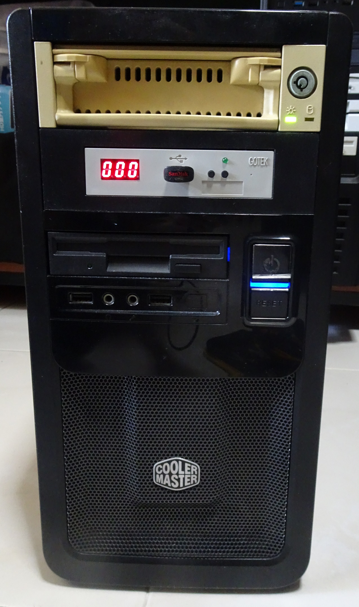

I recently purchased a new-old motherboard. It’s a motherboard released in 2020 but not the usual you would expect of the latest motherboard released this year that support the latest CPUs and connectivity options. This motherboard supports a CPU first released in 1979 (Intel 8088) and comes with historic connectivity options like serial and parallel.
When I first heard about the earlier iteration of this board the NuXT v1.2 version from retrocomputing Youtuber LGR, I was hooked.
With the latest new and improved NuXTv2.0 released recently, I decided to get one too as I needed a platform to go into coding for DOS to support the earliest IBM PCs. You can purchase this board here at Monotech PCs.

The motherboard as installed in a modern micro-ATX case.
I have an IDE hard disk caddy, Gotek Floppy Emulator with HxC firmware and a venerable 1.44MB Floppy Drive.
The bootup process. Notice the bootup sound which is the PC Speaker playing the Intel chime. What attention to detail!
The best part, the motherboard schematic is open source since it is itself based on other open-source projects. How many motherboards released today can claim that???
A history lesson
For those who are not into computing history, let’s step briefly back to almost 40 years. The IBM Personal Computer 5150 was first released in 1981.

This was a monumental moment as it is considered the ancestor of all modern PCs and set the standards which still permeates to every modern PC we use today.
Its successor the IBM Personal Computer XT 5160 released in 1983 provided very minor improvements such as more expansion slots and a hard drive as standard.

The NuXT name therefore comes from the name of this PC. To enable people to recreate the experience without costs of procuring the ancient IBM XT or PCs of this era from second-hand markets or the hassle of managing them.
Inspecting the hardware
Specifications
Now let’s first come to what the motherboard can offer us. I’ll just list the key specifications:
- Supports Intel 8088 and NEC V20 support + 8087 math co-processor
- 640K conventional + up to 192K UMB RAM
- Onboard VGA Graphics via PC/104 Expansion Platform
- Real-time clock (RTC) that uses a CR2032 cell
- External CF card, IDE, High-density Floppy controller
- Serial, Parallel, PS/2 mouse and keyboard
- ATX Power Input. Generates own -5V rail
- 4 x 8-bit ISA Slots

We can spot the 4x 8-bit ISA slots with 2 populated by my NE2000 network card and Sound Blaster 16. (Both are 16-bit ISA cards but work fine in 8-bit ISA slots.)
The “graphics card” uses the Trident TVGA9000i chip based on the PC/104 standard which allows it to be replaced. Talk about upgradable onboard graphics. Mine has 512K of VRAM which theoretically allows up to 1024x768x16 resolution but the system will be bottlenecked by the Intel 8088 CPU if you try to use this mode.
I use the NEC V20 (left of golden chip) which is a higher performance clone of the original Intel 8088. I paired it with an Intel 8087 math coprocessor (golden chip).
Back-panel Connectivity Options
The motherboard comes with a nicely-designed IO-shield with relatively modern connectors for a PC based on historic standards. The original XT did not come with any of these ports and those have to be added via expansion cards.
In fact, some modern motherboards still come with all these ports.
PS/2 Support, RTC, Floppy, IDE, DIP Switches
There are a lot of features cramped into this small area
Ah DIP switches. A feature hardly seen on motherboards this days but more common in old motherboards to configure hardware resources.
The PIC12F629 on the top left is to support modern PS/2 keyboards. The Atmel chip on its right converts the PS/2 mouse signals to a serial mouse as the XT system predates PS/2 support by a few years.
The DS12885 chip + CR2032 coin cell on top provides RTC functionality. RTCs are not an unknown for PCs of that era but designs tend to embed the battery in the chip or use permanently soldered batteries which cause long-term problems when they run out of juice or leak. Using a CR2032 cell brings things up to modern standards.
Note that this board has PS/2 Support, RTC, HD Floppy, IDE which did not originally exist during the XT era. This motherboard has augmented lots of features we take for granted in an integrated package.
Chipset
The closest thing to a chipset of this motherboard is the FE2010A which controls the peripherals. You can find more information on this chip here
Spy the modern-style header pins and the PC Speaker on the left.
BIOS
This project is heavily based on another project which is Sergey Kiselev’s Micro 8088 and so uses the same BIOS.
If you have seen the video at the top of this post, you’ll notice the Power-on Self Test and memory check goes by very quickly. Much faster than the original XT which literally took more than ten times as long.
Very rudimentary BIOS settings but this is still better than the original XT which did not offer such BIOS setting options.
Software support
Since the main CPU is Intel 8088-class, only DOS, early Windows and other operating systems from that era are supported. Here I used DOS 6.22 which is the latest standalone version of DOS from Microsoft.
Booting up and facing the familiar C:\> prompt.
Here I use SNTP from MTCP to sync the time proving that network connectivity through my NE2000 network card works.
If you are interested to see the DOS configuration files used in my setup, jump to this link
Why buy this expensive motherboard over an existing XT or alternatives?
I gather from forums and social media that there are many complaints that this product is too expensive considering other cheaper alternatives. The board costs about US$300 to US$370 depending on the options selected during purchase.
Looking from the surface, it is indeed a lot of money to spend on “an obsolete piece of junk”. However this has to be seen with some context.
Replacing an original XT
I own an IBM 5155 Portable PC which is the portable version of the XT.

It still works okay!
To rival the NuXT v2.0 in features, look at how many ISA expansion cards I have to put in to my 5155. I have to add in a video card, serial-floppy controller, XT-IDE controller, 640K RAM and RTC. I have no more slots to add in a parallel port controller yet the NuXT v2.0 has one. Only the sound and network cards are still used in both.
More detailed configuration details for my IBM 5155 can be found here.
So in terms of feature/price ratio in a direct comparison with the original XT today, the NuXT v2.0 wins hands down.
More expensive than “more modern” 386/486-era motherboards
This is true but the price and availability of alternatives like working 386/486-era motherboards are getting higher and scarcer as time goes by. If those fit your needs then go for them. However if you want an XT-era machine with modern conveniences, you’ll be hard-pressed to find a better alternative.
386/486 motherboards also mostly do not fit in modern ATX cases and need the older AT-style power connectors hence won’t work with modern ATX power-supply units.
This is a very niche-product. Pretty much only a small group of people with retrocomputing hobbies will be interested and an even smaller subset like me will buy it. I have some PCB design experience and I know hardware made at such low-runs are very expensive due to poor economies of scale.
This will never be able to compete on price with boards made in the tens to hundreds of thousands during their original runs. I’m honestly shocked that a board of such complexity is even sold at this price range considering the amount of effort and components that went into it.
Even though many modern components are used in the NuXT v2.0, there are still some expensive and relatively-scarce components that the design cannot run away from. Like the FE2010A chipset and PC8477 floppy controller so that adds to costs.
Conclusion
To be honest, this board is not for everyone. This open source hardware project happens to be something that aligns with my requirements so I gladly supported it with real cash. I expect to have many years of fun with this.
The NuXT v2.0 is expensive but for the “modern” feature set it offers, integrated BIOS, RTC, IDE, floppy, video, PS/2, serial and parallel, CF option, there are few alternatives that can beat this if you are in the market for such a product. It’s also a good learning platform to see how computers work as all our modern x86 machines today can be traced back to the architecture which is still recognisable in this PC.
When I faced some issues that needed troubleshooting help, the board designer JD was very friendly and responsive to my email request.
If only this board can integrate in network via say an NE2000 chipset for LAN and sound via Adlib or Sound Blaster, then it’ll indeed be a holy grail ultimate retrocomputing x86 motherboard.
If you are interested in purchasing this board, checkout Monotech PCs and many of his other retrocomputing products.


{kind=link}
{kind=link}
{kind=link}
{kind=link}
{kind=link}
{kind=link}
{kind=link}
{kind=link}
{kind=link}